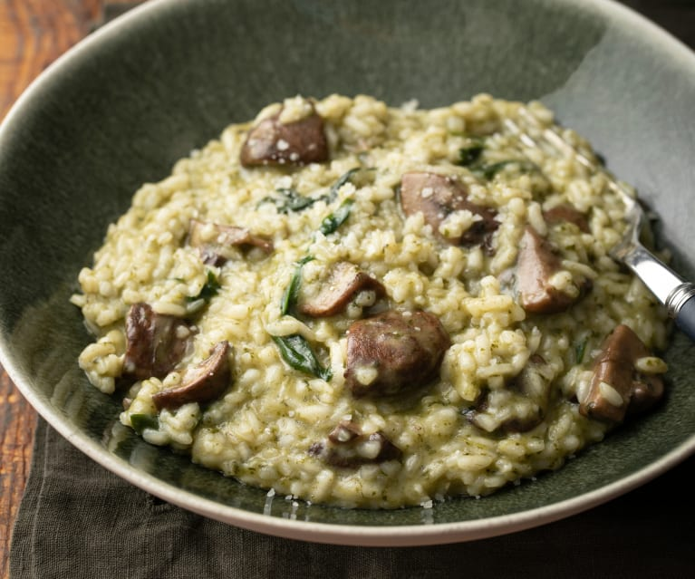

Mushroom Risotto Recipe

Mushroom Risotto, or Risotto ai Funghi, is a dish originating in Genoa, the capital city of Liguria, Italy.
Ingredients
- Olive Oil
- Garlic
- Rice
- Mushrooms
- etc...
Steps
- Step 1: Buy Mushroom Risotto from Restaurant
- Step 2: Eat Mushroom Risotto